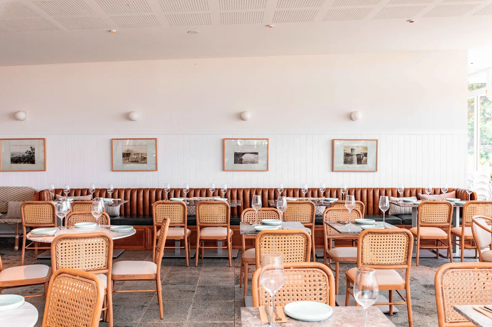
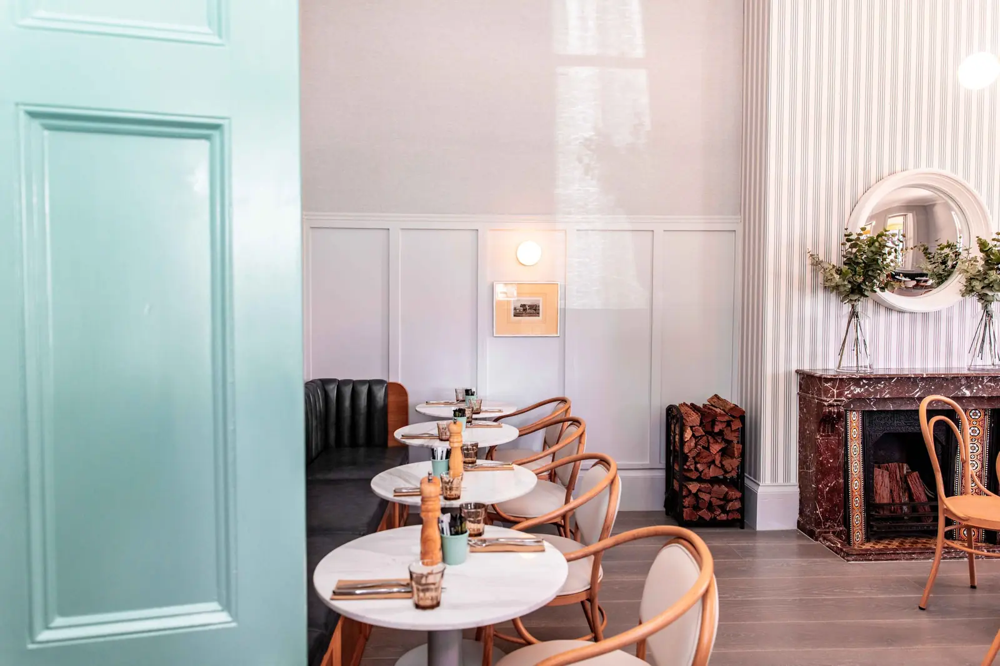
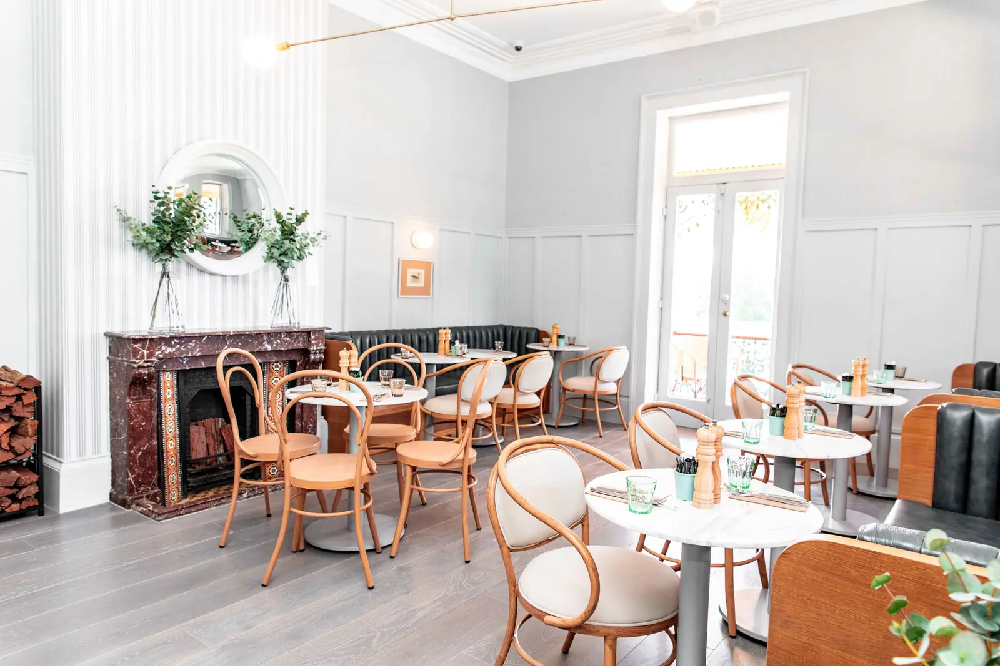
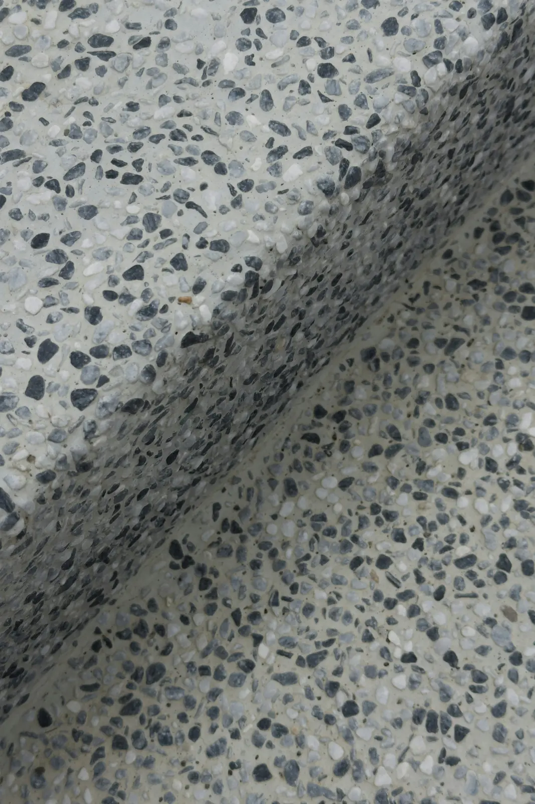
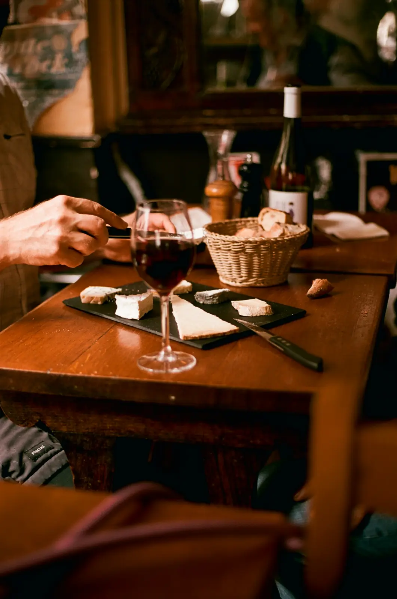
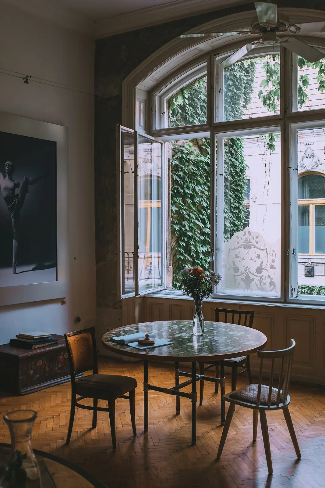

Otla
Placeholder project. The name, quote and photographs stand in for real work.
A Gujarati thali restaurant in a 1930s Bandra bungalow, built around the raised plinth where families used to spend their evenings.
- Location
- Bandra West, Mumbai, India
- Type
- Gujarati thali restaurant
- Size
- 240 m² + a 60 m² garden
- Covers / seats
- 88 covers (64 inside, 24 in the garden)
- Scope
- Concept · Interior design · Lighting · Joinery · FF&E · Signage · Build
- Duration
- 8 months, brief to opening · 20 weeks on site
- Opened
- November 2024
The brief
A family caterer’s first restaurant: 88 covers, a thali service that needs a refill at every table every few minutes, and a heritage bungalow whose outside could not change. It had to feel like somebody’s home and run like a canteen at one o’clock.
The move
Sit on the otla.
An otla is the raised plinth at the front of a Gujarati house, where the evening happens. We ran one around three walls of the dining room at 450 mm — seat height — as a single continuous banquette, and kept a clear lane down the middle wide enough for two servers with refill pots to pass.
What we did
- Concept
- Interior design
- Lighting
- Joinery
- FF&E
- Signage
- Build


FilmPlaceholder stock footage



The details



-
01Stone
The otla is grey Kota stone with a rounded edge, cushioned in block-printed cotton covers that unzip for washing.
-
02Service
Refill stations are built into the plinth every six metres, so no server walks more than a dozen steps for more dal.
-
03Light & air
The original ceiling fans restored and rewired; table light held at 200 lux, so food looks like food.
The build
The bungalow sits in a heritage precinct, so the façade, roof and windows were repaired like-for-like and everything new inside was made to be reversible. We sheeted the roof before anything else began and worked 20 weeks through the monsoon.
The outcome
Refills reach the table before anyone asks, which is the owners’ only real test of a thali service.
The garden tables are the first to book on weekend evenings.
In their words
“It still feels like somebody’s house. That was the whole brief.”
Credits
- Photography
- Placeholder stock photography
- Design & build
- Two Squares
- With
- Heritage consultant: [Consultant] · Textiles: [Block-print studio]

Opening something like this?
Send us the floor plan and the opening date. We’ll come back with how the room could work.